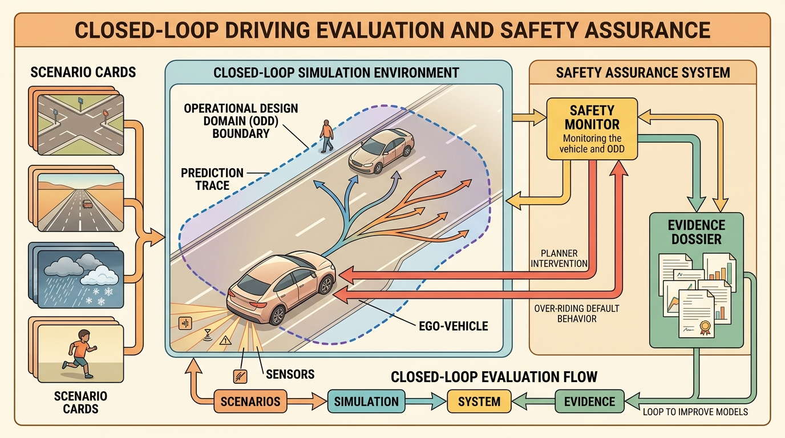

Open-loop scores measure how well you predict the world; closed-loop scores measure how the world changes once you act in it, and only the second kind keeps you safe.
On evaluating a driving stack
A vehicle that scores top-5 on a prediction leaderboard drove itself into a stopped truck during a highway merge, because the benchmark rewarded trajectory accuracy and never asked what the planner does when its own decision changes the scene. That gap between open-loop score and closed-loop survival is the central unsolved tension in deploying embodied driving systems today. This section develops the evaluation framework that closes it: closed-loop simulation metrics, infraction accounting, operational design domain bounds, and the safety-case structure that links benchmark numbers to real deployment decisions.

This section assumes familiarity with the sensor fusion and state estimation pipeline covered in section 48.2 and with the motion forecasting models introduced in section 48.3. The closed-loop evaluation framework developed here is extended in section 52.2, which treats route completion and infraction metrics for embodied systems more broadly. The safety-case reasoning introduced here recurs in Part 11 alongside robustness testing and deployment gate criteria.
Open-Loop Metrics Are Necessary, Not Sufficient
Modern driving stacks are usually evaluated in at least three modes. Open-loop evaluation checks perception or prediction against recorded data. Closed-loop simulation checks how the full stack behaves when its own decisions perturb the future. Safety assurance asks a different question again: which hazards remain, what mitigations exist, and what evidence shows that the mitigations actually work inside the stated operational design domain?
The first two modes are often confused. A forecasting model can improve average displacement error while still making the planner too confident in the wrong interaction pattern. One studied stack (circa 2023) dropped its open-loop displacement error by 18% across a merge benchmark, then posted a 31% higher collision rate in closed-loop because the planner read the sharper forecast as license to enter tighter gaps: this is the open-loop confidence trap, where better prediction directly causes worse driving. A smoother trajectory generator can reduce jerk while cutting safety margins. A benchmark score can rise even while the vehicle becomes easier to deadlock or easier to surprise in rare conditions.
Once the stack acts, it changes what happens next. That is why route completion, infractions, blocked-agent events, fallback activations, and controller saturation must be part of the evaluation, not mere debugging extras.
Driving Assurance Mathematics
Closed-loop evaluation often reduces the stack to a score, but the useful object is a tuple of behavior and risk:
$$E_{\mathrm{drive}} = (c_{\mathrm{route}}, p_{\mathrm{infractions}}, m_{\mathrm{comfort}}, m_{\mathrm{interaction}}, d_{\mathrm{ODD}}).$$
Here $c_{\mathrm{route}}$ is route completion, $p_{\mathrm{infractions}}$ aggregates collisions and rule violations, $m_{\mathrm{comfort}}$ tracks jerk and acceleration, $m_{\mathrm{interaction}}$ tracks negotiation quality such as deadlock or unsafe gap choice, and $d_{\mathrm{ODD}}$ records how close the scenario lies to the edge of the validated Operational Design Domain (ODD).
A useful benchmark formula is therefore not just "higher is better." One representative decomposition is:
$$J_{\mathrm{closed}} = c_{\mathrm{route}} \cdot p_{\mathrm{infractions}}, \qquad \text{subject to } d_{\mathrm{ODD}} \in \mathcal{D}_{\mathrm{validated}}.$$
This captures a core lesson from current leaderboard design: route progress matters, but it is only meaningful when infractions remain low and the scenario still sits inside the claimed ODD. Once the system leaves the validated domain, the benchmark score is no longer a deployment argument, only a research observation.
The ODD matters in embodied AI because physical systems cannot generalise away from the conditions they were validated on. A sensor suite calibrated for dry asphalt reflects light differently in standing water; a planner tuned on structured urban intersections has never encountered the timing patterns of a rural uncontrolled junction. Unlike a software service that degrades gracefully, a vehicle moving at speed has irreversible consequences when its perception or planning model operates outside its training distribution. The ODD is therefore a hard physical contract, not a marketing caveat.
Mechanically, ODD bounding works by tagging every closed-loop scenario with the environmental and traffic parameters that define it, then checking whether those parameters fall within the validated envelope before the score is used as a deployment argument. At runtime, an ODD monitor ingests sensor diagnostics (LiDAR return rate, camera exposure confidence, map localisation error) and traffic context, compares them against the declared envelope, and either confirms the system is operating within bounds or triggers a fallback policy. A score computed outside the envelope is logged separately and treated as exploratory data rather than safety evidence.
- Freeze the ODD card: road type, weather, lighting, speed range, traffic density, sensor assumptions, and fallback policy.
- Evaluate perception and prediction open-loop, but keep those metrics tagged as supporting evidence only.
- Run the full stack closed-loop on one scenario panel with one metric script and one taxonomy of infractions.
- Write the strongest defeater for every apparent success: what realistic condition would break this claim?
- Promote only the claims that survive both the metric panel and the defeater review.
A defeater works exactly like a food safety inspector checking a restaurant that passed its own health score: the kitchen may look clean by the metrics it chose to measure, yet a single unchecked cold-storage unit can invalidate the entire claim. Writing the strongest defeater means actively searching for that cold-storage unit before a diner gets sick. A metric that cannot name the condition under which it fails is not safety evidence; it is a restaurant grading itself on the number of clean forks.
Current Toolchain And What It Is For
The practical tool stack for this section is: CARLA Leaderboard, nuPlan, Waymo Open Dataset, Waymo Sim Agents or Waymax, CommonRoad, Autoware, ASAM OpenSCENARIO, OpenDRIVE. Each tool answers a different assurance question. CARLA Leaderboard tests closed-loop route completion with explicit infraction metrics. nuPlan and CommonRoad structure planning evaluation. Waymo's public challenges and simulator tools expose interaction realism. Autoware makes stack interfaces concrete. OpenSCENARIO and OpenDRIVE keep the scenario and map assumptions portable.
| Evidence layer | What to specify | What to save |
|---|---|---|
| ODD | Road type, weather, lighting, speed range, traffic density, map quality, fallback policy. | ODD card with explicit exclusions. |
| Scenario panel | Functional hazards, logical parameter ranges, concrete seeds, and actor scripts. | Scenario manifest plus reproducible seeds. |
| Closed-loop metrics | Route completion, infractions, comfort, blocked-agent events, planner timeouts, controller interventions. | One construct-matched metric artifact. |
| Safety case | Hazards, mitigations, assumptions, and strongest defeaters. | Annotated argument and failure traces. |
| Decision | Deploy, limit, or deny by ODD slice. | Written promotion decision with supporting evidence. |
Stress the system with interaction deadlock, occlusion, map error, braking-distance miscalibration, planner-induced near misses, metric gaming, ODD creep, sensor degradation, and stale fallback assumptions. These are not decorative stressors. They are the ordinary ways an autonomous vehicle (AV) stack becomes dangerous while still looking competent on a dashboard.
An AV stack may improve open-loop trajectory forecasting on a merge benchmark, then perform worse closed-loop because the planner trusts the forecast too much and enters gaps that humans would reject. The fix may live in uncertainty calibration, behavior planning, or fallback design rather than in the predictor's average error alone.
Code And Evidence
Before reading the code below, ask yourself: if your stack scored 96% route completion with only one blocked-agent event, would you deploy it? And if not, what exactly would you need to see before you would?
We can put this into practice with a tiny assurance record. The goal is not to compress the whole safety case into one object. The goal is to force the stack to admit which metric improved, which infraction still happened, and whether the claim is actually promotable.
# Store one closed-loop assurance summary for a driving stack.
# Keep the route metric, infraction metric, and deployment decision together.
from dataclasses import dataclass, asdict
@dataclass
class AssuranceRecord:
scenario_family: str
route_completion_pct: float
infraction_penalty: float
blocked_events: int
strongest_defeater: str
decision: str
def as_row(self) -> dict[str, object]:
return asdict(self)
record = AssuranceRecord(
scenario_family="unprotected_left_turn",
route_completion_pct=96.0,
infraction_penalty=0.91,
blocked_events=1,
strongest_defeater="late response to fast oncoming motorcycle in glare",
decision="limit_to_daylight_until_glare_panel_passes",
)
print(record.as_row())Expected output: the printed record should contain both performance and denial information, not just a success metric. If your assurance artifact cannot name the strongest remaining defeater and the resulting deployment limit, it is a benchmark summary rather than a safety argument.
Use CARLA Leaderboard for closed-loop route and infraction metrics, nuPlan and CommonRoad for structured planning evaluation, Waymo Sim Agents or Waymax for interaction realism studies, and Autoware to make the stack boundaries concrete. The shortcut is valuable because these tools expose public interfaces and public metrics, not because they make the safety problem disappear.
In CARLA Leaderboard 2.1 (as of 2024), the composite score is the product of route completion and infraction penalty (score = route_completion * infraction_penalty), so a single at-fault collision drives the penalty multiplier to zero and wipes out all route progress for that route. Always inspect the per-route breakdown in the JSON results file (typically results/ in the leaderboard output directory) rather than the summary table alone; aggregate scores can hide a single catastrophic route that masks a real safety gap. Set the --timeout flag conservatively (under 60 seconds) for early evaluation runs to avoid phantom high scores from scenarios where the agent simply stalls past all traffic.
Recipe For Builders
- Write the ODD card before comparing models. A model that works in daylight urban traffic is not automatically a model for glare, heavy rain, rural roads, or emergency-vehicle interactions.
- Use open-loop perception and prediction metrics as supporting evidence, then rerun the exact claim in closed-loop simulation.
- Keep route completion, infractions, comfort, blocked-agent events, and intervention logs in one artifact.
- Write the strongest defeater for every apparent success and convert it into a scenario or an explicit deployment limit.
- Only promote the stack where the metrics and the written safety argument agree.
A strong driving stack is not the one with no scary examples in the slide deck. It is the one whose scary examples have already been turned into explicit defeaters, limits, and regression tests.
A common assumption is that high route-completion and low-infraction scores in closed-loop simulation are sufficient to declare a driving stack safe for real deployment. That assumption is wrong. Simulators cannot yet faithfully reproduce the sensor-physics conditions that cause real failures: LiDAR rain scatter, camera HDR saturation, and radar multipath remain approximate. Simulation scenario panels are also never exhaustive. Treat closed-loop simulation results as one layer of a safety case, not the case itself. Pair them with an explicit Operational Design Domain card, written defeater analysis, and evidence that each mitigation holds under the physical sensor conditions present at deployment, not only under the simulator's rendering of those conditions.
Can you explain why a planner with better open-loop prediction metrics might still deserve a narrower ODD after closed-loop evaluation?
Language-conditioned scenario generation for safety-critical coverage (2024-2026). Rather than manually scripting edge cases, recent work uses vision-language models to automatically generate, mutate, and rank adversarial scenarios by their likelihood of exposing planner failures. DriveX (Wayve, 2025) and ScenarioLLM (Tsinghua / NVIDIA, 2024) both show that LLM-directed scenario synthesis can surface long-tail ODD violations that human scenario engineers miss, while keeping generated distributions tethered to realistic sensor statistics. The gap that remains: automatically verifying that a generated scenario actually stresses the specific failure mode the LLM described, rather than producing a superficially plausible but dynamically trivial variant.
Formal safety certificates from neural planners (2024-2026). Control-barrier-function (CBF) wrappers applied at inference time now allow neural end-to-end planners to provide probabilistic safety guarantees without retraining. SafeDrive-CBF (ETH Zurich, 2024) and similar work from Carnegie Mellon's RoboSafe group demonstrate that a CBF filter can enforce collision-avoidance constraints on a diffusion-based planner at interactive speeds, producing a verifiable safety layer on top of an otherwise uninterpretable learned policy. The open challenge is extending these certificates to multi-agent scenarios where the safety of one vehicle depends on the uncertain intent of surrounding agents.
Real-to-sim sensor fidelity transfer (2024-2025). NVIDIA's OmniSim and Waymo's SensorSim 2.0 now generate LiDAR point clouds and camera HDR frames from neural radiance fields trained on real sensor logs, rather than from hand-authored asset pipelines. This brings sensor-level fidelity much closer to ISO 21448 SOTIF analysis requirements. Remaining gaps include rain-scatter point-cloud artifacts at ranges beyond 40 m and oncoming-headlight blooming that causes camera exposure failures during unprotected left turns at dusk.
Open problem for a PhD student: Develop an automatic fidelity-gap metric that quantifies, for any neural simulator, how closely its generated LiDAR returns and camera histograms match a physical sensor model under a specified weather and lighting condition. A closed-form metric would let safety engineers certify which generated scenarios are admissible as primary safety evidence and which must be supplemented with physical-sensor test runs, directly addressing the weakest link in current closed-loop evaluation pipelines.
Closed-Loop Driving Evaluation And Safety Assurance belongs in the book because it teaches the difference between a good score and a defensible driving claim. In embodied AI, that difference is the whole game.
Take one scenario family, compute prediction metrics and closed-loop outcomes on the same panel, then write the safety argument and the strongest remaining defeater. End with a deployment decision that is narrower than the full ODD unless the evidence really supports the full claim.
Project Ideas
Beginner (weekend): Build a minimal closed-loop assurance record logger in Python using Gymnasium with a simple highway-env driving task: run an agent for 50 episodes, collect route completion and collision counts in a single CSV artifact, then write one explicit defeater sentence describing the scenario class where the agent most often fails. The key challenge is resisting the urge to tune the agent before finishing the logging infrastructure, because the measurement system must exist before the comparison means anything.
Intermediate (1 to 2 weeks): Implement an ODD monitor for a CARLA Leaderboard agent that tags every closed-loop episode with environmental parameters (weather preset, time of day, traffic density) and refuses to count out-of-ODD episodes toward the deployment score. The key challenge is defining a reproducible ODD card in code before running any scenarios, then enforcing it automatically so that high scores from easy weather presets cannot silently inflate the aggregate route-completion metric.
Intermediate-plus (2 weeks): Use ROS2 and Autoware to replay a real or simulated near-miss scenario, instrument the planner with a blocked-agent event counter and a controller-intervention flag, and produce an AssuranceRecord dataclass for each replay that includes the strongest defeater and a binary deploy-or-limit decision. The key challenge is wiring the metric extraction into the ROS2 topic graph so that the assurance record is generated automatically at the end of every replay rather than filled in manually after the fact.
Section References
CARLA Autonomous Driving Leaderboard. https://leaderboard.carla.org/
Current closed-loop benchmark with explicit route-completion and infraction metrics, including the 2.1 scoring update.
Waymo Open Dataset challenges. https://waymo.com/open/challenges/
Official 2026 note that leaderboards remain active even when formal challenge cycles pause, useful for current benchmark positioning.
Waymo Sim Agents challenge. https://waymo.com/research/the-waymo-open-sim-agents-challenge/
Public reference for interaction-realistic simulation metrics in autonomous driving.
Waymax. https://waymo.com/research/waymax/
Waymo's accelerated simulator for behavior research on motion-dataset scenarios.
Autoware documentation. https://autowarefoundation.github.io/autoware-documentation/main/home/
Open-source driving-stack documentation from sensing through control and simulation.
ISO 21448, Safety of the Intended Functionality. https://www.iso.org/standard/77490.html
Reference standard for reasoning about unsafe behavior without a component failure.
UL 4600 overview. https://users.ece.cmu.edu/~koopman/ul4600/index.html
Accessible overview of an assurance-oriented safety standard for autonomy.